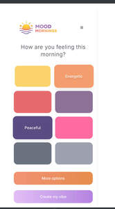

Trade Mark Journal No.2025/032 8 August 2025
UK00004240439 28 July 2025 (35)

- Class 35
- Merchandizing; Inventorying merchandise; Display services for merchandise; Merchandising; Product merchandising; Procuring of contracts for the purchase and sale of goods; Product merchandising for others; Promoting the sale of goods and services of others through the distribution of printed material and promotional contests; Promoting the sale of fashion goods through promotional articles in magazines; Promoting the goods and services of others through the distribution of discount cards; Wholesale services relating to sporting goods; Promoting the goods and services of others through the administration of sales and promotional incentive schemes involving trading stamps; Arranging of contracts for others for the buying and selling of goods; Advertising services relating to the sale of goods; Retail services relating to sporting goods; Arranging of contracts for the purchase and sale of goods and services, for others; Marketing the goods and services of others by distributing coupons; Promoting the sale of goods and services of others through promotional events; Retail services via catalogues related to foodstuffs; Business merchandising display services; Procurement of contracts for the purchase and sale of goods and services for others; Procurement of contracts for others relating to the sale of goods; Trade marketing [other than selling]; Promoting the goods and services of others by distributing coupons; Advertising of the goods of other vendors, enabling customers to conveniently view and compare the goods of those vendors; Arranging the buying of goods for others; Retail services relating to fake furs; Marketing the goods and services of others; Promotion of goods and services for others; Retail services connected with the sale of clothing and clothing accessories; Procurement of contracts for the purchase and sale of goods and services; Promoting the goods and services of others by arranging for sponsors to affiliate their goods and services with sporting activities; Promoting the goods and services of others by arranging for sponsors to affiliate their goods and services with sports competitions; Advertising services to promote the sale of beverages; Online retail store services relating to clothing; Promoting the goods and services of others; Mail order retail services for clothing accessories; Retail services relating to furs; Market analysis services relating to the sale of goods; Providing online marketplaces for sellers of goods and or services; Arranging business introductions relating to the buying and selling of products; Unmanned retail store services relating to food; Promotion of goods through influencers; Wholesale services relating to furs; Preparing promotional and merchandising material for others; Purchasing of goods and services for other businesses; Provision of an on-line marketplace for buyers and sellers of goods and services.
A2G Design Labs LTD